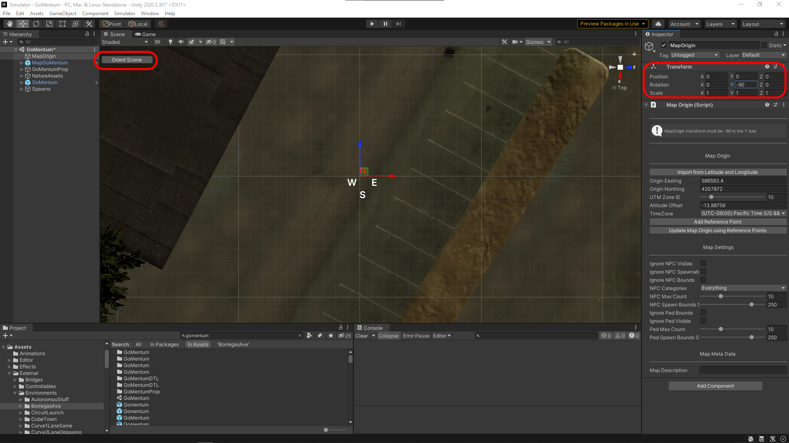

Conventions#
Table of Contents
SVL Simulator Coordinate Systems top#
Inside the simulator positions and rotations are represented by Transforms in Unity. Unity uses a left-handed ZXY coordinate system for transforms with the Y-axis being the vertical axis. Each simulation object such as vehicles, sensors, maps, traffic lights, etc. will have a transform associated with it. Understanding the transforms is especially important for defining custom sensor configurations for ego vehicles.
Converting between coordinate systems top#
The right-handed XYZ coordinate system is more commonly used in Robotics and Autonomous Vehicle applications and users may require to convert coordinate systems for some use-cases when using the SVL Simulator.
The tables below summarize conversions for 3D position vectors:
| ZXY (Unity) | XYZ (RH) |
|---|---|
| Z | X |
| X | -Y |
| Y | Z |
| XYZ (RH) | ZXY (Unity) |
|---|---|
| X | Z |
| Y | -X |
| Z | Y |
The tables below summarize conversions for 3D rotation vectors:
| ZXY (Unity) | XYZ (RH) |
|---|---|
| Z | -X |
| X | Y |
| Y | -Z |
| XYZ (RH) | ZXY (Unity) |
|---|---|
| X | -Z |
| Y | X |
| Z | -Y |
The tables below summarize conversions for quaternions:
| ZXY (Unity) | XYZ (RH) |
|---|---|
| Z | -X |
| X | Y |
| Y | -Z |
| W | W |
| XYZ (RH) | ZXY (Unity) |
|---|---|
| X | Y |
| Y | -Z |
| Z | -X |
| W | W |
Map Origin top#
Each simulator map includes a gameObject called MapOrigin. The Map Origin is the reference point of the map within Unity and has coordinate values of (0, 0, 0). The real-world position of the Map Origin is needed to output world coordinates using GNSS sensors. These values are stored within the gameObject as Easting and Northing values expressed in the UTM coordinate system as expressed below:

Aligning Map Origin to real world coordinates#
The position, rotation, and scale of the MapOrigin object are also involved in the transform between the virtual environment and real world map coordinates. Therefore, if the map is not perfect, instead of rotating and scaling the map, you can appropriately set values of the Transform component.
In order make this process easier and achieve a good mapping of the virtual world to the real world, you can use Reference Points. Just add a Reference Point by clicking on the button in MapOrigin, then move the Point to a characteristic place and enter the coordinates of this point in the real world. Add at least 2 such points, then click Update Map Origin using Reference Points in MapOrigin.
The values will be set to minimize mean squared error. You can see the error by selecting Reference Points. The green sphere shows GPS coordinates of the selected point (Latitude,Longitude).

Map Orientation in Unity top#
To ensure proper heading values in GNSS related topics, the map must be oriented in such a way the the Z-axis of the unity world coordinate is pointing East. Otherwise all orientation values will have an offset. This can be a bit unintuitive, since by default Unity will have the Z-axis pointing upward on the screen which can lead to users assuming that it aligns to the geographic North.
The images below illustrate the map of GoMentum Station with the correct orientation in Unity compared to a satellie image of the area from Google Maps:


As evident above, upon the first glance it appears that the GoMentum Station map in Unity is oriented incorrectly; however, if the user were to rotate the view-point so that the Z-axis would be pointing to the right-side of the screen (where the geographic East normally points), the two maps would align as seen in the image below:

To switch Unity Editor scene view to this orientation, select Simulator -> Editor Tools. Then select Scene type and in Scene Tools select RotateSceneView. Press Run to have the scene view change to this orientation. This will also change the camera type to Isometric for easier alignment.

Vehicle Root Position (BaseLink) top#
The vehicle root is the reference point of the ego vehicle model defined in a GameObject called BaseLink under the ego vehicle. BaseLink is intended to be placed at the center of the rear axle, however, if the GameObject does not exist it will be created when the simulation starts and will be placed at the pivot of the ego vehicle model. All sensor positions entered into the sensor configuration in the web UI are defined in the coordinate frame attached to BaseLink.
Setting up BaseLink top#
- Create a new GameObject named
BaseLinkand click 'Add Component' to add a script calledBaseLink.
- Move position to the center of the rear axle.

- Add BaseLink.cs and link it to public variable in VehicleSMI.cs

Transform Sensor top#
Sometimes it can be useful to create a coordinate frame at some point on the ego vehicle to use as a reference for sensor positions. The Transform Sensor provides this functionality. The Transform Sensor is an "empty" sensor, meaning that it has no sensor functionality and only has a coordinate frame and can be used as a parent for other sensors in the Simulator sensor configuration.
Customizing sensor configurations top#
Customized sensor configurations are created in the SVL Simulator Web UI by providing JSON formatted descriptions (covered here).